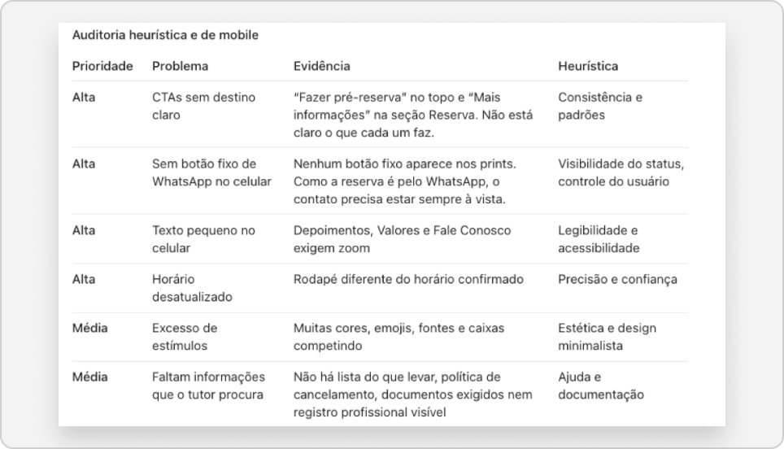
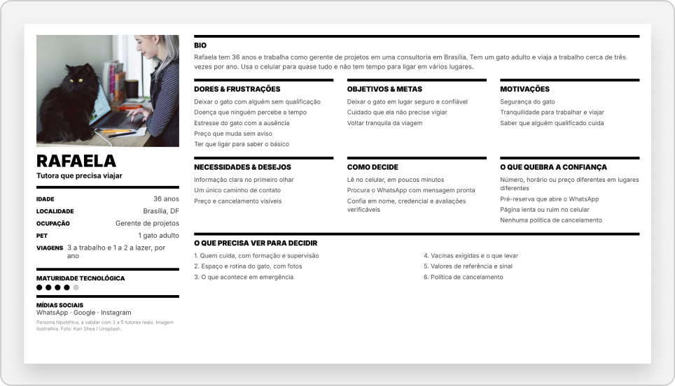

CASE 1 · COMFY CATS HOTEL · 2026
Redesigning a landing page with AI
From diagnosis to production in 1.5 days of work
- Role
- Product designer and front-end (solo project)
- Company
- Petry Design
- Client
- Comfy Cats Hotel Boutique Felina (volunteer project)
- Duration
- 1.5 days with AI
- 1.5 days
- Working time with AI, from diagnosis to launch
- 37 → 96
- Mobile performance, measured in Lighthouse, before and after
- 8.4 s → 1.5 s
- Time for the largest element to appear on mobile
30-second summary
Problem
The hotel's landing page, the main entry point for new cat owners, showed conflicting information, had a confusing contact path and did not work well on mobile.
What I did
I led the redesign on my own, with AI as support, following the Double Diamond: inventory, audits, proto persona, architecture, wireframe, style guide, Figma mockups and code in HTML, CSS and JavaScript.
Result
Mobile performance from 37 to 96, accessibility from 83 to 100 and largest element in 1.5 s (previously 8.4 s), in 1.5 days of work and approved by the client before going to production.
The solution
A mobile-first landing page that answers the owner's questions in the order they decide
Eight blocks, from the top section with the promise and WhatsApp down to contact, with a single path to reach the hotel and a fixed button on mobile. Conflicting information was corrected, and the page became light and accessible.
The site was approved by the client and is in production.


Key decisions
Ordering the page by the persona's questions
- Instead of
- Keeping the order of the old page's nine sections.
- Why
- The owner first decides based on who takes care of the cat and what the space is like, and only then looks at requirements and price.
- Outcome
- The most important questions are answered right at the start, with little scrolling.
A single WhatsApp button, fixed on mobile
- Instead of
- Two buttons with different names, “Fazer pré-reserva” and “Mais informações”, for the same action.
- Why
- The contact path was confusing, and on mobile there was no contact always visible.
- Outcome
- A single path to WhatsApp, visible anywhere on the page.
Videos that only load when play is clicked
- Instead of
- Loading the videos together with the page.
- Why
- The old page weighed about 9 MB and the largest element took 8.4 s to appear on mobile.
- Outcome
- Contributed to mobile performance going from 37 to 96.
Overview and challenge
Comfy Cats Hotel Boutique Felina, a cat hotel in Brasília, had a landing page that was the main entry point for new cat owners. But it showed conflicting information, had a confusing contact path and did not work well on mobile.
The challenge was to make the page clear and trustworthy within a few minutes of reading, so that owners who need to travel understand how to leave their cat safely, without having to ask everything over WhatsApp, while changing the content as little as possible.
My role
As product designer, I led the redesign from start to finish, from diagnosis to launch. I approved each phase before moving on: discovery, problem and metrics definition, page architecture, Figma layouts and code in HTML, CSS and JavaScript.
My focus was to turn confusing content into a page that answers the owner's questions on mobile, in order of importance, and to measure the result with Lighthouse before and after. I used AI as support for analysis, documents, code and measurement, but design decisions, scope and approval stayed with me.
Process
I followed the Double Diamond. In the first diamond, I understood the problem before proposing any solution. In the second, I created and delivered the solution. I worked one phase at a time, and each one only moved forward after my approval.
AI was present throughout the process, as support and not as the decision-maker. It helped organize the inventory and audits, structure the problem definition, build the page architecture, generate the code and measure the result. Scope, content and design choices stayed with me. Each phase produced a record with goal, method, decisions and insights, and those records are the basis of this case.
I published the first version in a test environment, presented it to the client, who approved it, and only then took the site to production.
Activities
Below are some of the activities and stages I carried out in this case.
Content Inventory
Before designing, I listed the nine sections of the current page, in the order they appear, with what each one contained: text, buttons, numbers and contacts. The inventory showed what should be kept, what was wrong and what was repeated. That is how I found a WhatsApp number with a wrong digit at the top of the page, and two buttons, “Fazer pré-reserva” (pre-book) and “Mais informações” (more information), with different names but the same action.Heuristic and Mobile Audit
I evaluated the page against usability heuristics and the mobile experience. The layout did not adapt to mobile: it was a scaled-down poster, with text too small in testimonials, prices and contact. I found three high-priority problems: two buttons with different names for the same action, no fixed contact on mobile, and opening hours in the footer that differed from the confirmed ones. I also identified two medium-priority problems: too many visual stimuli and missing information owners look for, such as what to bring and the cancellation policy.



Technical Audit of Accessibility, Performance and SEO
I measured the current page with Lighthouse, on mobile and desktop, to get a baseline before any change. On mobile, performance was 37 and the page weighed about 9 MB. The largest element only appeared after 8.4 seconds, and total blocking time reached 1,060 ms. Accessibility was at 83, with images without alt text, links without clear names and small touch targets. SEO scored 45: a server header and a Canva setting prevented Google from indexing the site.Competitor Analysis
I analyzed three cat hotels outside Brazil, based on their public websites. Boutique Cat Resorts, in Australia, shows its link with a veterinarian and checks the cat's health on arrival. Mission Cats, in the United States, keeps owners informed with text, video and photos, and shows the deposit and cancellation policy on the home page. Cats Luv Us, on the other hand, shows no contact, prices or policies, and feels more like a content guide than a place to book.
The finding that most guided the redesign was this: they all present themselves as cats-only, but trust comes from showing price, who takes care of the cat, the cancellation policy and clear rules.

Proto Persona
I created Rafaela, a 36-year-old proto persona: a project manager in Brasília, owner of an adult cat and a frequent traveler. She decides quickly, on her phone, and wants the essentials without calling several places. This persona is a hypothesis, built from the audit and the client's answers, and still needs to be validated with three to five real cat owners.Problem Statement
Owners who need to travel, like Rafaela, want to leave their cat somewhere safe and trustworthy. But the current page shows conflicting information, has a confusing contact path and does not work well on mobile. This forces owners to ask everything over WhatsApp or give up on booking.“How Might We” Questions (HMW)
From the statement, I wrote four questions to guide the solution: how to show right at the start who takes care of the cat; how to answer the most common questions without requiring a message; how to make the path to WhatsApp obvious on mobile; and how to convey that the cat is doing well, using the daily photos the client already sends.



Success Metrics
I defined eight metrics, each with a baseline and a target. They include messages received per week, the drop in repeated questions, the time for the largest element on mobile and the Lighthouse scores.Scope
Must-haves were the single landing page, a mobile-first layout, a single WhatsApp number and a single set of opening hours, the fixed button on mobile, and the performance, accessibility and SEO targets. Nice-to-haves were the map with a link, a gallery with real photos, if authorized, and video thumbnails. Left out were a blog, a booking form, online payment, WhatsApp automation, analytics and a general rewrite of the copy.Architecture in 8 Blocks
I organized the page into eight blocks, in the order owners need the answers: top with promise and WhatsApp, who takes care, lodging, medical care, prices, FAQ, testimonials and contact. This order follows the persona's questions: first who takes care and what the space is like, then what is required and how much it costs.

Mobile Wireframe
Before choosing colors and fonts, I drew a low-fidelity mobile wireframe to test the order of information on mobile. The goal was to answer the most important questions right at the start, with little scrolling, and leave a single path to WhatsApp.Style Guide
I created a style guide for the page, with the same palette and fonts as the owner's guide, so the website and the hotel's materials stay consistent. The palette has fixed roles: green for text and headings, pink for highlights and arrows, and off-white as the background. Every text combination meets WCAG AA contrast, and pink never appears as text on a light background. Typography uses Fraunces for headings and Lora for body text.


Figma Mockups
I turned the wireframe into high-fidelity layouts in Figma, for mobile (390 px) and desktop (1200 px), using the palette and typography from the style guide. The new logo was used as an image, without recoloring.Responsive Prototype
From the mockups, I built a responsive prototype to validate how the page behaves on different screens, such as navigation, the fixed WhatsApp button and videos that only load when play is clicked.Delivery
I published the first version in a test environment on Netlify to check that the final layout matched the mockups. Then I presented the result to the client, who approved it, and only then took the site to production. The site is live at marimeirelles.github.io/comfycatshotel. The code, in plain HTML, CSS and JavaScript, was written with AI support and reviewed by me, and is available on GitHub.
For now, Google indexing remains disabled until the client validates the copy. For that reason, SEO is shown as pending in this case.
Results
What my work caused
Mobile performance and accessibility
Performance went from 37 to 96, and accessibility from 83 to 100. These numbers come from the production version and meet the targets set in the Define phase.
Loading and SEO
The page's largest element now appears in 1.5 seconds, compared with 8.4 seconds before. The SEO score is 63, below target, because Google indexing will only be enabled after the client validates the copy.
Working time
The project took 1.5 days with AI. Without AI, the estimate is 2 weeks.
What happened to the project
Approved and in production
The client approved the test version, and the site is live. Google indexing is waiting for the client to validate the copy.
Learnings
Measure before claiming
In the first versions of the prototype measurements, AI estimated positions and sizes without checking. I only corrected them after measuring the PDF. Since then, every claim about the site went through a measurement: Lighthouse before and after, and checking the layout against the mockups.
The inventory finds what nobody is looking for
By listing every section of the current page, I found a WhatsApp number with a wrong digit at the top, which was the main booking channel. This kind of error disappears in day-to-day routine and only shows up when someone lists everything.
AI speeds things up, decisions stay human
I used AI for analysis, documents, code and measurement, and it reduced working time from weeks to 1.5 days. Even so, scope, content and design went through me, and each phase only moved forward with my approval.
Trust comes from concrete information
In the reference analysis, the hotels that conveyed trust showed price, who takes care of the cat and the cancellation policy. That information became a priority on the page, before any visual adjustment.
Test before publishing
The first version was published in a test environment, and only after the client approved the result did the site go to production. This step avoided launching a version that had not yet been validated by the business owner.
What has not been measured yet
Conversion and WhatsApp messages
We do not have booking conversion, because there is no access to analytics, nor the number of messages received on WhatsApp, which depends on the client's data. Both remain as next steps to track after launch.